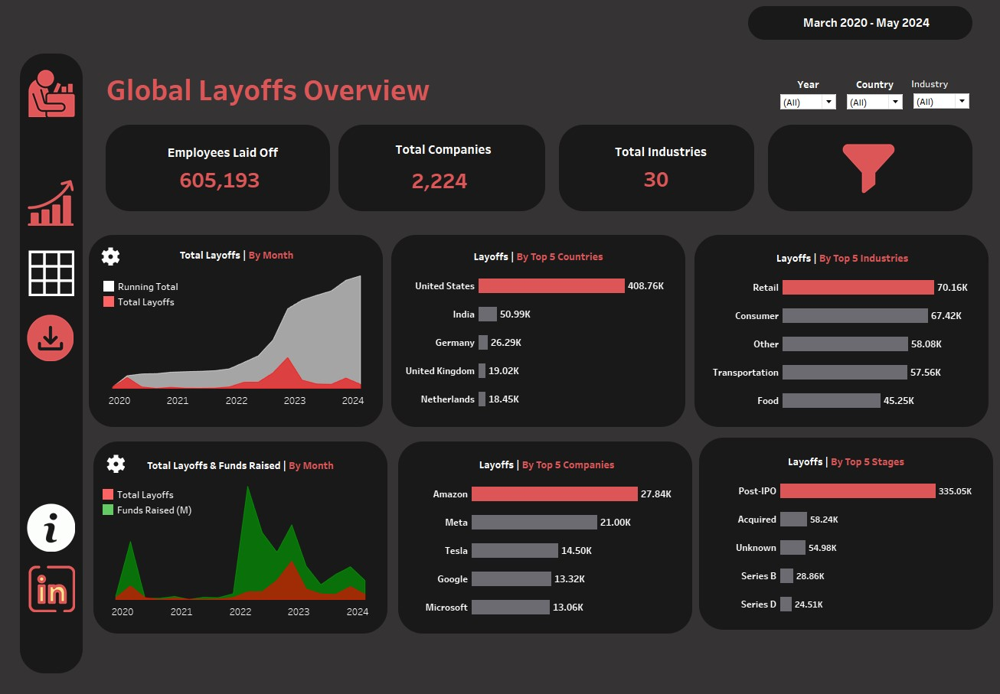

SQL | Tableau
In this project, we leverage MySQL to aggregate and cleanse data from diverse sources, creating a dashboard in Tableau that compares patient satisfaction scores across hospitals to drive insights for value-based care.

In this project, we leverage MySQL to clean a dataset containing information about global layoffs. We then create a dashboard in Tableau that highlights key metrics such as the number of employees laid off, total companies and industries affected, and provides a breakdown by top countries, industries, companies, and stages.
This project uses Python to clean and analyze car sales data from December 2014 to July 2015. The resulting interactive dashboard highlights total sales, profit, and orders, with detailed insights by state, make, model, color, condition, and mileage. This helps stakeholders identify trends and make informed decisions.